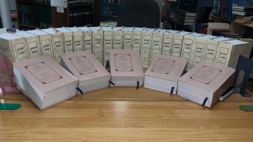

Dari Pemeluk Hindu Hingga Menjadi Profesor Hadits Universitas Islam Madinah
Karya legendaris Prof. Dhiyaurrahman Azmi di bidang hadis akan memasukkannya pada level yang sama dengan para ulama klasik.
Saat ini, kita banyak mendengar kisah orang-orang kembali kepada fitrah mereka, memeluk Islam. Hal ini patut kita syukuri. Tapi hanya ada beberapa orang yang berasal dari kegelapan agama leluhur mereka setelah menerima cahaya Islam berhasil menghadirkan pengaruh dan kontribusi yang luar biasa untuk kemajuan pengetahuan keislaman. Jika kita melihat warisan hebat yang ditinggalkan oleh mualaf seperti Muhammad Asad, Maryam Jamilah, Dr. Maurice Bucaille, Muhammad Pickthall, Michael Wolfe, dan Pamela Taylor, pencapaian mereka benar-benar menakjubkan. Saat ini, ada tokoh yang luar biasa yang mungkin melampaui para pendahulunya. Ia adalah Prof. Muhammad Dhiya ur-Rahman Azmi. Ia memberi kontribusi yang sangat besar dalam kajian ilmu hadits. Sebuah pencapaian yang layak dikenang dan menjadi bagian dari sejarah peradaban Islam.
Islam Tak Mengenal Kasta Sosial
Muhammad Dhiya ur-Rahman Azmi dulu bernama Banke Laal. Lahir tahun 1943 dalam sebuah keluarga Hindu di desa Bilarya Ganj. Sebuah desa yang terletak di Kecamatan Azamgarh, India. Saat memeluk Islam usianya 18 tahun. Konsep kesetaraan dan keadilan yang ditawarkan Islam telah membuatnya terkesan. Menurutnya, hal itu merupakan keistimewaan dan humanisme yang hanya ada pada Islam. Alasan ini pula yang menyebabkan banyak orang-orang di anak benua India memeluk Islam. Mereka ingin lepas dari sekat-sekat kasta. Dan mendapatkan kebebasan bertindak sesuai dengan cita-cita dan kehendak mereka.
Di India ada beberapa organisasi yang memfasilitasi perpindahan agama. Kegiatan organisasi ini dikenal dengan Ghar Wapsi. Sebuah kegiatan yang difasilitasi organisasi Hindu India untuk memfasilitasi perpindahan agama seorang non-Hindu ke agama Hindu. Di masyarakat Islam India, tidak didapatkan aktivitas semacam ini. Tidak ada donasi atau bantuan materi yang didapat bagi mereka yang baru saja memeluk Islam. Sisi baiknya, seseorang yang memeluk Islam benar-benar menyambut perintah Allah dan lahir dari niat yang tulus. Jika ingin menjadi seorang muslim, hal yang harus Anda lakukan adalah memahami pesan hakiki dari Islam itu sendiri.
Dijauhi Keluarga dan Hijrah Mendalami Islam
Setelah memeluk Islam, kedua orang tua dan keluarga dekatnya memboikot Syaikh Muhammad Dhiyaurrahman Azmi. Ia pun hijrah ke Pakistan untuk mendalami agama. Ia belajar agama di Madrasah yang bekerja sama dengan Jamiah Islamiyah. Kemudian melanjutkan studi S1 di Universitas Islam Madinah (Jamiah Islamiyah Madinah), Arab Saudi. Di tempat ini, ia menjadi lulusan pertama yang pernah beragama Hindu.
Tidak berhenti hanya di tingkat sarjana, Syaikh Dhiyaurrahman melanjutkan studi pasca sarjananya (S2) ke King Abdul Aziz University di Mekah, yang kemudian dikenal dengan Ummul Qura University. Gelar doktornya ia dapatkan dari Universitas al-Azhar, Kairo.
Kepakarannya di bidang hadits adalah sesuatu yang diakui khalayak. Universitas Islam Madinah mengakuinya dengan mengangkatnya sebagai guru besar (profesor) di Fakultas Hadits kampus tersebut. Bahkan Kerajaan Arab Saudi sendiri menghadiahinya kewarga-negaraan Arab Saudi sebagai bentuk terima kasih atas kontribusi yang ia berikan dalam kajian ilmu hadits.
Syaikh Dhiyaurrahman tidak membatasi aktivitasnya hanya di bidang akademik semata. Ia juga aktif ambil bagian dalam bidang administratif. Seperti bergabung dengan Liga Muslim Dunia (Muslim World League) di Mekah. Dan juga menjadi dekan Fakultas Hadits Universitas Islam Madinah hingga pensiun. Setelah pensiun, ia diangkat menjadi pengajar di Masjid Nabawi oleh Departemen Urusan Masjid Nabawi pada tahun 2013.
Sumbangan Terhadap Peradaban Islam
Banyak karya tulis telah dibuat oleh Profesor Dhiyaurrahman Azmi. Ia menulis puluhan buku tentang berbagai topik penting dalam Islam. Tapi yang paling istimewa adalah karya monumentalnya berupa ensiklopedia hadits. Ia beri judul karyanya itu dengan al-Jami’ al-Kamil fi al-Hadits ash-Shahih ash-Shamil. Karya istimewanya ini adalah kumpulan hadits-hadits shahih yang tersebar di berbagai buku-buku klasik.

al-Jami al-Kamil fi al-Hadits ash-Shahih asy-Syamil, karya monumental Prof. Muhammad Dhiyaurrahman AzmiBuku al-Jami’ al-Kamil fi al-Hadits ash-Shahih ash-Shamil terdiri dari 20 jilid lebih buku tebal. Yang berisi sekitar 16.000 Hadis. Memuat tentang berbagai permasalahan: akidah, hukum, ibadah, biografi Nabi, fikih, tafsir Alquran, dan masih banyak lagi. Orang-orang akan mengingat Syaikh Prof Muhammad Dhiyaurrahman Azmi dan berterima kasih padanya atas usahanya meneliti hadits. Mengumpulkannya sehingga mudah untuk dipelajari dan dibaca para pecinta hadits Nabi shallallahu ‘alaihi wa sallam. Usahanya ini menjadi bukti bagaimana ia meneladani usaha Imam al-Bukhari, Muslim, Abu Dawud, at-Turmudzi, an-Nasai, dan Imam Malik dalam meneliti dan mengumpulkan hadits.
Karya legendaris lain yang merupakan kesungguhan Prof. Azmi adalah “Encyclopedia of the Qur’an Glorious” dalam bahasa Hindi. Umat Islam pernah berkuasa selama sekitar 800 tahun di India, sayangnya tak banyak buku yang tersedia dalam bahasa asli mereka yang menjelaskan menjelaskan makna Alquran. Memberikan pencerahan tentang nilai-nilai kemanusiaan yang diberitakan Alquran.
Ensiklopedia unik yang ditulis oleh Prof. Azmi ini, mengeksplorasi lebih dari 600 topik bahasan. Buku ini merupakan buku pertama (pionir) yang ditulis tentang tema ini dalam bahasa Hindi. Dalam waktu sangat singkat, buku ini sudah dicetak sebanyak delapan kali di India. Karena respon umat yang bagus terhadap buku ini, edisi bahasa Urdu dan India pun segera dicetak pula. Bisa dikatakan, buku ini adalah salah satu buku terbaik dalam kajian Alquran. Pembahasan diurutkan berdasarkan susunan abjad. Di dalamnya juga dimuat foto dan peta tempat-tempat yang masyhur.
Penelitiannya dalam menempuh pendidikan juga merupakan penelitian yang menarik. Tesis Master-nya berjudul Abu Hurairah fi Dhau-i Marwiyatihi: Dirasatun Muqaranatun fi Miati Haditsin min Marwiyatihi adalah bentuk pembelaan terhadap sahabat Nabi, Abu Hurairah radhiallahu ‘anhu. Ia membantah tuduhan yang dibuat oleh beberapa orang yang mempertanyakan keaslian hadist yang diriwayatkan oleh Abu Hurairah. Sedangkan disertasinya adalah penelitian terhadap kitab Aqdhiyatu Rasulullah shallallahu ‘alaihi wa sallam.
Dalam bukunya Dari Ganga ke Zamzam dalam bahasa Urdu, Prof. Azmi menceritakan kisah keislamannya dan banyaknya kesulitan yang harus ia hadapi. Tentu buku ini juga menarik untuk dibaca. Kemudian karyanya yang istimewa tentang studi perbandingan agama, Dirasat al-Yahudiyah wa al-Masihiyah wa al-Adyan al-Hind juga mendapat apresiasi yang tinggi. Buku ini dijadikan acuan materi pembelajaran tingkat yang lebih tinggi di universitas-universitas di Arab Saudi. Saat ini, Prof. Azmi terlibat dalam proyek penulisan studi perbandingan agama Hindu, Budha, Jainisme, dan Sikhisme yang akan segera diterbitkan pula.
Penutup
Tidak ada yang menyangka, seorang anak laki-laki yang terlahir di sebuah keluarga Hindu di kemudian hari menjadi guru hadits di Universitas Islam Madinah dan pengajar di Masjid Nabawi. Profesor Azmi merupakan orang yang istimewa. Perjalanannya hidupnya mengajarkan kita bahwa kehidupan ini bagaikan roda yang berputar. Seseorang bisa di berada di putaran bawah menghadapi kesulitan. Kemudian berada di bagian atas menikmati kesuksesan. Seseorang harus berusaha menyelesaikan putaran kesulitan yang ia hadapi sampai ia berhasil membuktikan kepada dunia -dengan izin Allah-, ia mampu berkontribusi untuk peradaban.
Kesederhanaan memiliki peran penting dalam pembentukan karakter. Karena kesederhanaan mampu menahan seorang untuk berbuat yang tidak semestinya ia lakukan. Kesederhanaan juga menjadi perisai yang menghalangi sifat sombong. Kesederhanaan adalah kunci untuk kesalehan dan baiknya perbuatan. Kesederhanaan, sopan santun, dan kerendahan hati begitu tampak pada sosoknya.
Prof. Azmi adalah figur yang membuat kita teringat dengan kebenaran sabda Rasulullah shallallahu ‘alaihi wa sallam,
النَّاسُ مَعَادِنُ كَمَعَادِنِ الذَّهَبِ وَالْفِضَّةِ خِيَارُهُمْ فِي الْجَاهِلِيَّةِ خِيَارُهُمْ فِي اْلإِسْلاَمِ إِذَا فَقُهُوا وَالْأَرْوَاحُ جُنُودٌ مُجَنَّدَةٌ فَمَا تَعَارَفَ مِنْهَا ائْتَلَفَ وَمَا تَنَاكَرَ مِنْهَا اخْتَلَفَ
““Manusia ibarat barang tambang berharga seperti tambang emas dan perak. Orang yang mulia pada masa jahiliyah, akan menjadi orang yang mulia juga dalam Islam apabila ia paham agama. Ruh ibarat pasukan yang dikumpulkan, ia akan bersatu jika serasi dan akan berselisih jika tidak serasi”. (HR Muslim).
Sumber:
http://saudigazette.com.sa/life/faith/journey-hinduism-islam-professor-hadith-madinah/